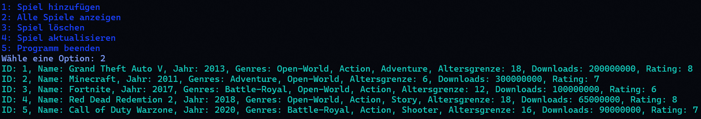

Spiele-Datenbank in Python mit MongoDB
Dieses Python-Projekt bietet ein einfaches Konsolenprogramm zur Verwaltung einer Spielesammlung mithilfe einer MongoDB-Datenbank. Du kannst Spiele hinzufügen, anzeigen, aktualisieren und löschen – alles über ein interaktives Terminalmenü mit farbiger Ausgabe dank colorama.
Funktionen und Merkmale:
- Spiele hinzufügen: Inkl. Genre, Jahr, Altersfreigabe, Downloads & Bewertung.
- Alle Spiele anzeigen: Übersicht aller gespeicherten Spiele.
- Spiele löschen: Einfaches Entfernen von Einträgen nach ID.
- Spiele bearbeiten: Bestehende Einträge aktualisieren.
- Eingabevalidierung: Stellt korrekte Eingaben sicher (z. B. gültiges Jahr, Bewertung etc.).
- Farbliche Rückmeldungen: Klares Feedback im Terminal dank Colorama.
Neugierig? Besuchen Sie das GitHub-Repository, um den Code und weitere Details zu sehen:
Zum GitHub-Repository